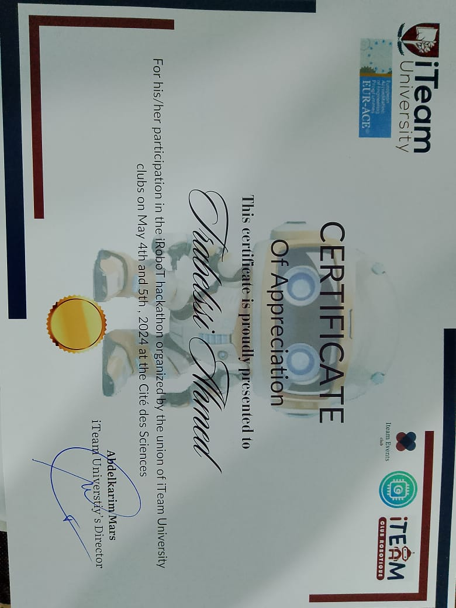

Hackathons
Hackathon à l'ISET (2023)
En 2023, j'ai participé à un hackathon à l'ISET, où nous avons exploré des solutions innovantes utilisant l'intelligence artificielle pour résoudre des problèmes réels. L'événement m'a permis de collaborer avec des passionnés de technologie, de perfectionner mes compétences en IA et de présenter notre projet devant un jury d'experts.
Hackathon organisé par Iteam University (4-5 mai 2024)
Lors de ce hackathon, nous avons développé un suiveur de ligne en utilisant une carte Arduino. Le défi était de concevoir et de programmer un robot capable de suivre une ligne tracée sur le sol, une tâche combinant programmation embarquée et électronique. Ce projet m'a permis de renforcer mes compétences en systèmes embarqués, en robotique et en travail d'équipe.
Autres Activités
Ooredoo Night Run
Je participe également au marathon nocturne organisé par Ooredoo, l'Ooredoo Night Run, une compétition sportive nocturne mêlant endurance et esprit d'équipe. Cet événement est l'occasion pour moi de rester actif et de me challenger personnellement tout en profitant de l'énergie de la course nocturne.
Loisirs & Centres d'Intérêt
- Regarder des films, notamment des thrillers, des drames et de la science-fiction.
- Écouter de la musique, en particulier du rock, de la musique électronique et des morceaux instrumentaux pour m'inspirer.
- Explorer les dernières tendances technologiques à travers des podcasts, des vidéos et des articles spécialisés.